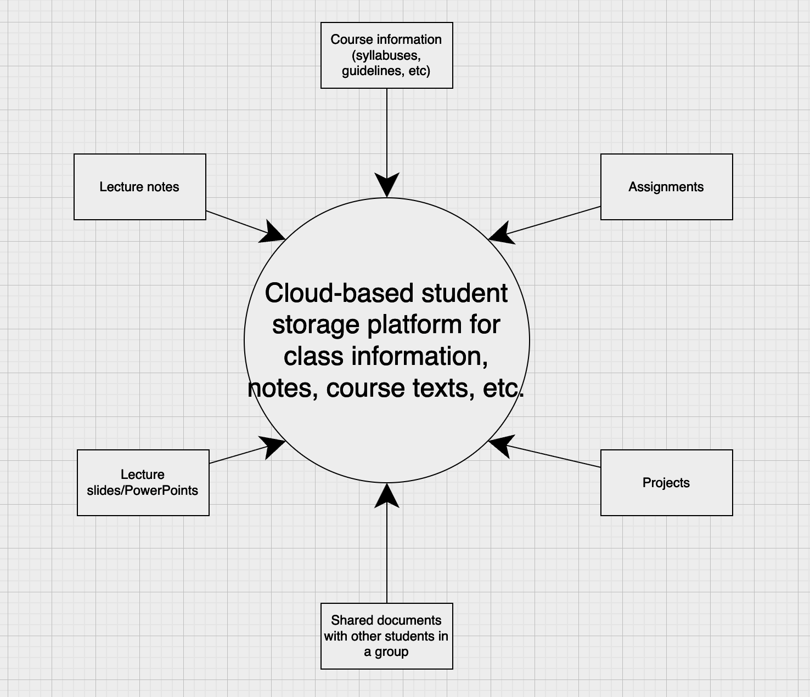

About Us
A common problem that many of us students face is organizational issues when it comes to our classes and assignments. Often, we find ourselves struggling to figure out where and how to store information related to our class, how to navigate through our course assignments and due dates without feeling overwhelmed and cluttered. We need a centralized place to store our syllabuses, notes, course texts, view upcoming assignments that are due and collaborate with classmates on projects.
That's where FSCDrive comes in.
We're in the business of making cloud storage easier and more accessible to all FSC students and instructors. Our industry-class cloud storage and collaboration tools combined with file organization tailored specifically to FSC makes being a student easier than ever.
